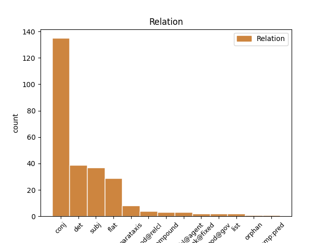
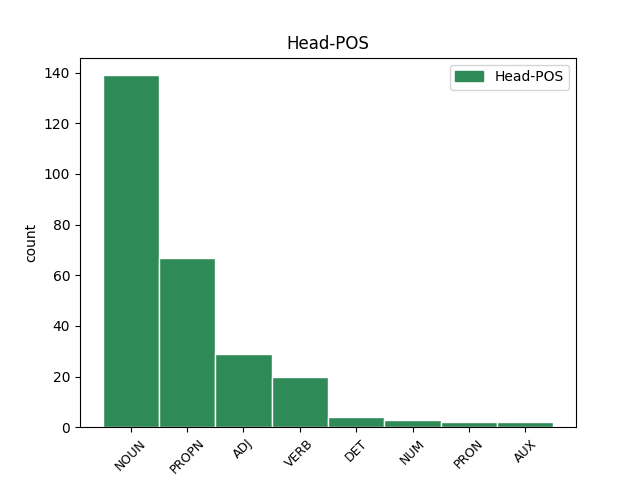
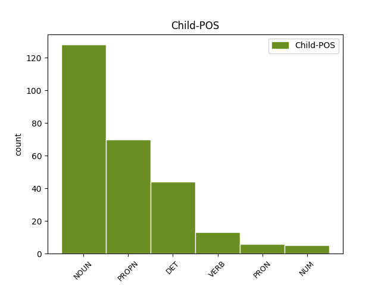

Distribution of features within this leaf



Agreement Rules sorted by frequency.
- When the dependent token is the conjunct(conj) of the head token, and the dependent token is NOUN.
1 Esu _ _ _ _ 0 _ _ _
2 ne _ _ _ _ 0 _ _ _
3 kartą _ _ _ _ 0 _ _ _
4 kalbėjęs _ _ _ _ 0 _ _ _
5 apie _ _ _ _ 0 _ _ _
6 pavojingą _ _ _ _ 0 _ _ _
7 „ _ _ _ _ 0 _ _ _
8 lietuviškąją _ _ _ _ 0 _ _ _
9 triadą _ _ _ _ 0 _ _ _
10 “ _ _ _ _ 0 _ _ _
11 ( _ _ _ _ 0 _ _ _
12 sakyčiau _ _ _ _ 0 _ _ _
13 , _ _ _ _ 0 _ _ _
14 lietuviškąjį _ _ _ _ 0 _ _ _
15 Bermudų _ _ _ _ 0 _ _ _
16 trikampį _ _ _ _ 0 _ _ _
17 ) _ _ _ _ 0 _ _ _
18 – _ _ _ _ 0 _ _ _
19 nesutarimus _ _ _ _ 0 _ _ _
20 su _ _ _ _ 0 _ _ _
21 rusais _ _ _ _ 0 _ _ _
22 , _ _ _ _ 0 _ _ _
23 lenkais lenkas NOUN NN Case=Ins|Gender=Masc|Number=Plur 0 _ _ _
24 ir _ _ _ _ 0 _ _ _
25 žydais žydas NOUN NN Case=Ins|Gender=Masc|Number=Plur 23 conj _ En=Jews|SpaceAfter=No
26 , _ _ _ _ 0 _ _ _
27 arba _ _ _ _ 0 _ _ _
28 su _ _ _ _ 0 _ _ _
29 Rusija _ _ _ _ 0 _ _ _
30 , _ _ _ _ 0 _ _ _
31 Lenkija _ _ _ _ 0 _ _ _
32 ir _ _ _ _ 0 _ _ _
33 Izraeliu _ _ _ _ 0 _ _ _
34 . _ _ _ _ 0 _ _ _
1 Sąjūdžio _ _ _ _ 0 _ _ _
2 ir _ _ _ _ 0 _ _ _
3 ankstyvosios _ _ _ _ 0 _ _ _
4 nepriklausomybės _ _ _ _ 0 _ _ _
5 laikais _ _ _ _ 0 _ _ _
6 kartais _ _ _ _ 0 _ _ _
7 atrodė _ _ _ _ 0 _ _ _
8 , _ _ _ _ 0 _ _ _
9 jog _ _ _ _ 0 _ _ _
10 tie tas DET DT Case=Nom|Gender=Masc|Number=Plur 11 det _ En=those
11 nesutarimai nesutarimas NOUN NN Case=Nom|Gender=Masc|Number=Plur|Polarity=Neg 0 _ _ _
12 pamažu _ _ _ _ 0 _ _ _
13 , _ _ _ _ 0 _ _ _
14 bet _ _ _ _ 0 _ _ _
15 sėkmingai _ _ _ _ 0 _ _ _
16 sprendžiasi _ _ _ _ 0 _ _ _
17 . _ _ _ _ 0 _ _ _
1 Vytautas Vytautas PROPN NNP Case=Nom|Gender=Masc|Number=Sing 0 _ _ _
2 Radžvilas Radžvilas PROPN NNP Case=Nom|Gender=Masc|Number=Sing 1 flat _ En=Radžvilas
3 kalba _ _ _ _ 0 _ _ _
4 apie _ _ _ _ 0 _ _ _
5 Lietuvos _ _ _ _ 0 _ _ _
6 išvalstybinimą _ _ _ _ 0 _ _ _
7 , _ _ _ _ 0 _ _ _
8 nutautinimą _ _ _ _ 0 _ _ _
9 , _ _ _ _ 0 _ _ _
10 valstybinės _ _ _ _ 0 _ _ _
11 ir _ _ _ _ 0 _ _ _
12 tautinės _ _ _ _ 0 _ _ _
13 sąmonės _ _ _ _ 0 _ _ _
14 dekonstrukciją _ _ _ _ 0 _ _ _
15 Europos _ _ _ _ 0 _ _ _
16 Sąjungoje _ _ _ _ 0 _ _ _
17 . _ _ _ _ 0 _ _ _
1 Esu _ _ _ _ 0 _ _ _
2 ne _ _ _ _ 0 _ _ _
3 kartą _ _ _ _ 0 _ _ _
4 kalbėjęs _ _ _ _ 0 _ _ _
5 apie _ _ _ _ 0 _ _ _
6 pavojingą _ _ _ _ 0 _ _ _
7 „ _ _ _ _ 0 _ _ _
8 lietuviškąją _ _ _ _ 0 _ _ _
9 triadą _ _ _ _ 0 _ _ _
10 “ _ _ _ _ 0 _ _ _
11 ( _ _ _ _ 0 _ _ _
12 sakyčiau _ _ _ _ 0 _ _ _
13 , _ _ _ _ 0 _ _ _
14 lietuviškąjį _ _ _ _ 0 _ _ _
15 Bermudų _ _ _ _ 0 _ _ _
16 trikampį _ _ _ _ 0 _ _ _
17 ) _ _ _ _ 0 _ _ _
18 – _ _ _ _ 0 _ _ _
19 nesutarimus _ _ _ _ 0 _ _ _
20 su _ _ _ _ 0 _ _ _
21 rusais _ _ _ _ 0 _ _ _
22 , _ _ _ _ 0 _ _ _
23 lenkais _ _ _ _ 0 _ _ _
24 ir _ _ _ _ 0 _ _ _
25 žydais _ _ _ _ 0 _ _ _
26 , _ _ _ _ 0 _ _ _
27 arba _ _ _ _ 0 _ _ _
28 su _ _ _ _ 0 _ _ _
29 Rusija Rusija PROPN NNP Case=Nom|Gender=Fem|Number=Sing 0 _ _ _
30 , _ _ _ _ 0 _ _ _
31 Lenkija Lenkija PROPN NNP Case=Nom|Gender=Fem|Number=Sing 29 conj _ En=Poland
32 ir _ _ _ _ 0 _ _ _
33 Izraeliu _ _ _ _ 0 _ _ _
34 . _ _ _ _ 0 _ _ _
1 Beje _ _ _ _ 0 _ _ _
2 , _ _ _ _ 0 _ _ _
3 ateityje _ _ _ _ 0 _ _ _
4 ( _ _ _ _ 0 _ _ _
5 tiesa _ _ _ _ 0 _ _ _
6 , _ _ _ _ 0 _ _ _
7 gana _ _ _ _ 0 _ _ _
8 tolimoje _ _ _ _ 0 _ _ _
9 ) _ _ _ _ 0 _ _ _
10 nepriklausomas _ _ _ _ 0 _ _ _
11 valstybes _ _ _ _ 0 _ _ _
12 iš _ _ _ _ 0 _ _ _
13 viso _ _ _ _ 0 _ _ _
14 galbūt _ _ _ _ 0 _ _ _
15 pavaduos _ _ _ _ 0 _ _ _
16 globalinė _ _ _ _ 0 _ _ _
17 sąjungą _ _ _ _ 0 _ _ _
18 , _ _ _ _ 0 _ _ _
19 kurios _ _ _ _ 0 _ _ _
20 bruožai bruožas NOUN NN Case=Nom|Gender=Masc|Number=Plur 21 subj _ En=features
21 pastebimi pastebėti VERB VBNL Case=Nom|Definite=Ind|Gender=Masc|Number=Plur|Polarity=Pos|Reflex=No|Tense=Pres|VerbForm=Part|Voice=Pass 0 _ _ _
22 ir _ _ _ _ 0 _ _ _
23 dabar _ _ _ _ 0 _ _ _
24 : _ _ _ _ 0 _ _ _
25 tai _ _ _ _ 0 _ _ _
26 anaiptol _ _ _ _ 0 _ _ _
27 nereiškia _ _ _ _ 0 _ _ _
28 , _ _ _ _ 0 _ _ _
29 kad _ _ _ _ 0 _ _ _
30 išnyks _ _ _ _ 0 _ _ _
31 tautiniai _ _ _ _ 0 _ _ _
32 skirtingumai _ _ _ _ 0 _ _ _
33 , _ _ _ _ 0 _ _ _
34 kalbos _ _ _ _ 0 _ _ _
35 ir _ _ _ _ 0 _ _ _
36 tradicijos _ _ _ _ 0 _ _ _
37 . _ _ _ _ 0 _ _ _
1 Savarankiškas savarankiškas ADJ JJL Case=Nom|Definite=Ind|Degree=Pos|Gender=Masc|Number=Sing 0 _ _ _
2 , _ _ _ _ 0 _ _ _
3 nieko _ _ _ _ 0 _ _ _
4 neribojamas riboti VERB VBNL Case=Nom|Definite=Ind|Gender=Masc|Number=Sing|Polarity=Neg|Reflex=No|Tense=Pres|VerbForm=Part|Voice=Pass 1 conj _ En=limit
5 valstybingumas _ _ _ _ 0 _ _ _
6 laikomas _ _ _ _ 0 _ _ _
7 absoliučia _ _ _ _ 0 _ _ _
8 ir _ _ _ _ 0 _ _ _
9 pirmąja _ _ _ _ 0 _ _ _
10 vertybe _ _ _ _ 0 _ _ _
11 , _ _ _ _ 0 _ _ _
12 nepalyginti _ _ _ _ 0 _ _ _
13 svarbesne _ _ _ _ 0 _ _ _
14 už _ _ _ _ 0 _ _ _
15 demokratiją _ _ _ _ 0 _ _ _
16 , _ _ _ _ 0 _ _ _
17 žmogiškumą _ _ _ _ 0 _ _ _
18 ar _ _ _ _ 0 _ _ _
19 sveiką _ _ _ _ 0 _ _ _
20 protą _ _ _ _ 0 _ _ _
21 . _ _ _ _ 0 _ _ _
1 Bet _ _ _ _ 0 _ _ _
2 kad _ _ _ _ 0 _ _ _
3 ir _ _ _ _ 0 _ _ _
4 ką _ _ _ _ 0 _ _ _
5 sakysi _ _ _ _ 0 _ _ _
6 , _ _ _ _ 0 _ _ _
7 vienas _ _ _ _ 0 _ _ _
8 skirtumas _ _ _ _ 0 _ _ _
9 yra _ _ _ _ 0 _ _ _
10 akivaizdus _ _ _ _ 0 _ _ _
11 – _ _ _ _ 0 _ _ _
12 Sokratas _ _ _ _ 0 _ _ _
13 nebūtų _ _ _ _ 0 _ _ _
14 padegęs _ _ _ _ 0 _ _ _
15 Strepsiado Strepsiadas PROPN NNP Case=Gen|Gender=Masc|Number=Sing 16 subj _ En=Strepsiade
16 namų namai NOUN NN Case=Gen|Gender=Masc|Number=Plur 0 _ _ _
17 ir _ _ _ _ 0 _ _ _
18 nebūtų _ _ _ _ 0 _ _ _
19 jo _ _ _ _ 0 _ _ _
20 įskundinėjęs _ _ _ _ 0 _ _ _
21 valdžiai _ _ _ _ 0 _ _ _
22 . _ _ _ _ 0 _ _ _
1 Į _ _ _ _ 0 _ _ _
2 tai _ _ _ _ 0 _ _ _
3 man _ _ _ _ 0 _ _ _
4 bus _ _ _ _ 0 _ _ _
5 atsakyta _ _ _ _ 0 _ _ _
6 : _ _ _ _ 0 _ _ _
7 „ _ _ _ _ 0 _ _ _
8 čia _ _ _ _ 0 _ _ _
9 ne _ _ _ _ 0 _ _ _
10 mes mes PRON PRP Case=Nom|Number=Plur|Person=1 12 subj _ En=we
11 vieni _ _ _ _ 0 _ _ _
12 kalti kaltas ADJ JJL Case=Nom|Definite=Ind|Degree=Pos|Gender=Masc|Number=Plur 0 _ _ _
13 “ _ _ _ _ 0 _ _ _
14 . _ _ _ _ 0 _ _ _
1 Beveik _ _ _ _ 0 _ _ _
2 visi _ _ _ _ 0 _ _ _
3 garsieji _ _ _ _ 0 _ _ _
4 mūsų _ _ _ _ 0 _ _ _
5 intelektualai _ _ _ _ 0 _ _ _
6 pasuko _ _ _ _ 0 _ _ _
7 arba _ _ _ _ 0 _ _ _
8 pradeda _ _ _ _ 0 _ _ _
9 sukti _ _ _ _ 0 _ _ _
10 ne _ _ _ _ 0 _ _ _
11 Sokrato _ _ _ _ 0 _ _ _
12 , _ _ _ _ 0 _ _ _
13 o _ _ _ _ 0 _ _ _
14 Strepsiado _ _ _ _ 0 _ _ _
15 keliu _ _ _ _ 0 _ _ _
16 , _ _ _ _ 0 _ _ _
17 nors _ _ _ _ 0 _ _ _
18 jau _ _ _ _ 0 _ _ _
19 du _ _ _ _ 0 _ _ _
20 tūkstančius _ _ _ _ 0 _ _ _
21 penkis penki NUM CD Case=Acc|Gender=Masc 22 compound _ En=five
22 šimtus šimtas NUM CD Case=Acc|Gender=Masc|Number=Plur 0 _ _ _
23 metų _ _ _ _ 0 _ _ _
24 – _ _ _ _ 0 _ _ _
25 ir _ _ _ _ 0 _ _ _
26 ne _ _ _ _ 0 _ _ _
27 be _ _ _ _ 0 _ _ _
28 pagrindo _ _ _ _ 0 _ _ _
29 – _ _ _ _ 0 _ _ _
30 manoma _ _ _ _ 0 _ _ _
31 , _ _ _ _ 0 _ _ _
32 kad _ _ _ _ 0 _ _ _
33 intelektualui _ _ _ _ 0 _ _ _
34 labiau _ _ _ _ 0 _ _ _
35 dera _ _ _ _ 0 _ _ _
36 Sokrato _ _ _ _ 0 _ _ _
37 kelias _ _ _ _ 0 _ _ _
38 . _ _ _ _ 0 _ _ _
1 Beje _ _ _ _ 0 _ _ _
2 , _ _ _ _ 0 _ _ _
3 ateityje _ _ _ _ 0 _ _ _
4 ( _ _ _ _ 0 _ _ _
5 tiesa _ _ _ _ 0 _ _ _
6 , _ _ _ _ 0 _ _ _
7 gana _ _ _ _ 0 _ _ _
8 tolimoje _ _ _ _ 0 _ _ _
9 ) _ _ _ _ 0 _ _ _
10 nepriklausomas _ _ _ _ 0 _ _ _
11 valstybes _ _ _ _ 0 _ _ _
12 iš _ _ _ _ 0 _ _ _
13 viso _ _ _ _ 0 _ _ _
14 galbūt _ _ _ _ 0 _ _ _
15 pavaduos _ _ _ _ 0 _ _ _
16 globalinė _ _ _ _ 0 _ _ _
17 sąjungą sąjunga NOUN NN Case=Nom|Gender=Fem|Number=Sing 0 _ _ _
18 , _ _ _ _ 0 _ _ _
19 kurios _ _ _ _ 0 _ _ _
20 bruožai _ _ _ _ 0 _ _ _
21 pastebimi pastebėti VERB VBNL Case=Nom|Definite=Ind|Gender=Masc|Number=Plur|Polarity=Pos|Reflex=No|Tense=Pres|VerbForm=Part|Voice=Pass 17 mod@relcl _ En=noticeable
22 ir _ _ _ _ 0 _ _ _
23 dabar _ _ _ _ 0 _ _ _
24 : _ _ _ _ 0 _ _ _
25 tai _ _ _ _ 0 _ _ _
26 anaiptol _ _ _ _ 0 _ _ _
27 nereiškia _ _ _ _ 0 _ _ _
28 , _ _ _ _ 0 _ _ _
29 kad _ _ _ _ 0 _ _ _
30 išnyks _ _ _ _ 0 _ _ _
31 tautiniai _ _ _ _ 0 _ _ _
32 skirtingumai _ _ _ _ 0 _ _ _
33 , _ _ _ _ 0 _ _ _
34 kalbos _ _ _ _ 0 _ _ _
35 ir _ _ _ _ 0 _ _ _
36 tradicijos _ _ _ _ 0 _ _ _
37 . _ _ _ _ 0 _ _ _
1 Taip _ _ _ _ 0 _ _ _
2 nėra _ _ _ _ 0 _ _ _
3 ir _ _ _ _ 0 _ _ _
4 Strepsiado _ _ _ _ 0 _ _ _
5 - _ _ _ _ 0 _ _ _
6 Sokrato _ _ _ _ 0 _ _ _
7 ( _ _ _ _ 0 _ _ _
8 tiksliau _ _ _ _ 0 _ _ _
9 , _ _ _ _ 0 _ _ _
10 Aristofano Aristofanas PROPN NNP Case=Gen|Gender=Masc|Number=Sing 0 _ _ _
11 - _ _ _ _ 0 _ _ _
12 Sokrato Sokratas PROPN NNP Case=Gen|Gender=Masc|Number=Sing 10 list _ En=Socrates|SpaceAfter=No
13 ) _ _ _ _ 0 _ _ _
14 konflikte _ _ _ _ 0 _ _ _
15 . _ _ _ _ 0 _ _ _
1 „ _ _ _ _ 0 _ _ _
2 Mano _ _ _ _ 0 _ _ _
3 adresas _ _ _ _ 0 _ _ _
4 ne _ _ _ _ 0 _ _ _
5 namas namas NOUN NN Case=Nom|Gender=Masc|Number=Sing 0 _ _ _
6 ir _ _ _ _ 0 _ _ _
7 ne _ _ _ _ 0 _ _ _
8 gatvė _ _ _ _ 0 _ _ _
9 – _ _ _ _ 0 _ _ _
10 mano _ _ _ _ 0 _ _ _
11 adresas _ _ _ _ 0 _ _ _
12 Europos _ _ _ _ 0 _ _ _
13 Sąjunga sąjunga PROPN NNP Case=Nom|Gender=Fem|Number=Sing 5 parataxis _ En=union|SpaceAfter=No
14 “ _ _ _ _ 0 _ _ _
15 , _ _ _ _ 0 _ _ _
16 toliau _ _ _ _ 0 _ _ _
17 ironizuoja _ _ _ _ 0 _ _ _
18 Radžvilas _ _ _ _ 0 _ _ _
19 . _ _ _ _ 0 _ _ _
1 Tiesa tiesa NOUN NN Case=Nom|Gender=Fem|Number=Sing 4 parataxis _ En=to_say_the_truth|SpaceAfter=No
2 , _ _ _ _ 0 _ _ _
3 Lenkijoje _ _ _ _ 0 _ _ _
4 gajesnis gajus ADJ JJR Case=Nom|Definite=Ind|Degree=Cmp|Gender=Masc|Number=Sing 0 _ _ _
5 ir _ _ _ _ 0 _ _ _
6 protestas _ _ _ _ 0 _ _ _
7 prieš _ _ _ _ 0 _ _ _
8 tuos _ _ _ _ 0 _ _ _
9 reiškinius _ _ _ _ 0 _ _ _
10 – _ _ _ _ 0 _ _ _
11 yra _ _ _ _ 0 _ _ _
12 stipri _ _ _ _ 0 _ _ _
13 , _ _ _ _ 0 _ _ _
14 net _ _ _ _ 0 _ _ _
15 galinga _ _ _ _ 0 _ _ _
16 intelektualių _ _ _ _ 0 _ _ _
17 grupė _ _ _ _ 0 _ _ _
18 , _ _ _ _ 0 _ _ _
19 nuo _ _ _ _ 0 _ _ _
20 Adamo _ _ _ _ 0 _ _ _
21 Michniko _ _ _ _ 0 _ _ _
22 ligi _ _ _ _ 0 _ _ _
23 Andrzejaus _ _ _ _ 0 _ _ _
24 Wajdos _ _ _ _ 0 _ _ _
25 , _ _ _ _ 0 _ _ _
26 kuri _ _ _ _ 0 _ _ _
27 puikiai _ _ _ _ 0 _ _ _
28 analizuoja _ _ _ _ 0 _ _ _
29 ir _ _ _ _ 0 _ _ _
30 stabdo _ _ _ _ 0 _ _ _
31 . _ _ _ _ 0 _ _ _
1 O _ _ _ _ 0 _ _ _
2 tie tas DET DT Case=Nom|Number=Plur|Person=3 12 subj _ En=those|SpaceAfter=No
3 , _ _ _ _ 0 _ _ _
4 kurie _ _ _ _ 0 _ _ _
5 pas _ _ _ _ 0 _ _ _
6 jus _ _ _ _ 0 _ _ _
7 vadinami _ _ _ _ 0 _ _ _
8 dešiniaisiais _ _ _ _ 0 _ _ _
9 , _ _ _ _ 0 _ _ _
10 pas _ _ _ _ 0 _ _ _
11 mus _ _ _ _ 0 _ _ _
12 vadinami vadinti VERB VBNH Case=Nom|Definite=Ind|Gender=Masc|Number=Plur|Polarity=Pos|Reflex=No|Tense=Pres|VerbForm=Part|Voice=Act 0 _ _ _
13 pusgalviais _ _ _ _ 0 _ _ _
14 “ _ _ _ _ 0 _ _ _
15 . _ _ _ _ 0 _ _ _
1 Turi _ _ _ _ 0 _ _ _
2 atsirasti _ _ _ _ 0 _ _ _
3 nauja _ _ _ _ 0 _ _ _
4 valstybinė _ _ _ _ 0 _ _ _
5 ir _ _ _ _ 0 _ _ _
6 tautinė _ _ _ _ 0 _ _ _
7 sąmonė _ _ _ _ 0 _ _ _
8 , _ _ _ _ 0 _ _ _
9 tokia toks DET DT Case=Nom|Gender=Fem|Number=Sing 0 _ _ _
10 kaip _ _ _ _ 0 _ _ _
11 dabartinių _ _ _ _ 0 _ _ _
12 vokiečių _ _ _ _ 0 _ _ _
13 , _ _ _ _ 0 _ _ _
14 anglų _ _ _ _ 0 _ _ _
15 ar _ _ _ _ 0 _ _ _
16 prancūzų _ _ _ _ 0 _ _ _
17 , _ _ _ _ 0 _ _ _
18 o _ _ _ _ 0 _ _ _
19 ne _ _ _ _ 0 _ _ _
20 tokia toks DET DT Case=Nom|Gender=Fem|Number=Sing 9 conj _ En=these|SpaceAfter=No
21 , _ _ _ _ 0 _ _ _
22 kaip _ _ _ _ 0 _ _ _
23 Radio _ _ _ _ 0 _ _ _
24 Maryja _ _ _ _ 0 _ _ _
25 lenkų _ _ _ _ 0 _ _ _
26 arba _ _ _ _ 0 _ _ _
27 Dugino _ _ _ _ 0 _ _ _
28 bei _ _ _ _ 0 _ _ _
29 Prochanovo _ _ _ _ 0 _ _ _
30 rusų _ _ _ _ 0 _ _ _
31 . _ _ _ _ 0 _ _ _
1 Jei _ _ _ _ 0 _ _ _
2 būtų _ _ _ _ 0 _ _ _
3 laimėjęs _ _ _ _ 0 _ _ _
4 Strepsiadas _ _ _ _ 0 _ _ _
5 , _ _ _ _ 0 _ _ _
6 tiksliau _ _ _ _ 0 _ _ _
7 , _ _ _ _ 0 _ _ _
8 Strepsiado _ _ _ _ 0 _ _ _
9 idėja _ _ _ _ 0 _ _ _
10 – _ _ _ _ 0 _ _ _
11 ligi _ _ _ _ 0 _ _ _
12 šiol _ _ _ _ 0 _ _ _
13 gyventume _ _ _ _ 0 _ _ _
14 dorų _ _ _ _ 0 _ _ _
15 , _ _ _ _ 0 _ _ _
16 darbščių _ _ _ _ 0 _ _ _
17 , _ _ _ _ 0 _ _ _
18 patriarchališkų _ _ _ _ 0 _ _ _
19 , _ _ _ _ 0 _ _ _
20 tėvynę _ _ _ _ 0 _ _ _
21 mylinčių _ _ _ _ 0 _ _ _
22 žemdirbių _ _ _ _ 0 _ _ _
23 bendruomenėse _ _ _ _ 0 _ _ _
24 , _ _ _ _ 0 _ _ _
25 nieko _ _ _ _ 0 _ _ _
26 nežinančiose žinoti VERB VBNL Case=Loc|Definite=Ind|Gender=Fem|Number=Plur|Polarity=Neg|Reflex=No|Tense=Pres|VerbForm=Part|Voice=Act 0 _ _ _
27 ir _ _ _ _ 0 _ _ _
28 nenorinčiose _ _ _ _ 0 _ _ _
29 žinoti _ _ _ _ 0 _ _ _
30 apie _ _ _ _ 0 _ _ _
31 tolimesnius _ _ _ _ 0 _ _ _
32 kraštus _ _ _ _ 0 _ _ _
33 ir _ _ _ _ 0 _ _ _
34 visatą _ _ _ _ 0 _ _ _
35 – _ _ _ _ 0 _ _ _
36 beje _ _ _ _ 0 _ _ _
37 , _ _ _ _ 0 _ _ _
38 apsuptose apsupti VERB VBNL Case=Loc|Definite=Ind|Gender=Fem|Number=Plur|Polarity=Pos|Reflex=No|Tense=Past|VerbForm=Part|Voice=Act 26 parataxis _ En=surround
39 nekenčiamų _ _ _ _ 0 _ _ _
40 ir _ _ _ _ 0 _ _ _
41 iš _ _ _ _ 0 _ _ _
42 tikro _ _ _ _ 0 _ _ _
43 pavojingų _ _ _ _ 0 _ _ _
44 barbarų _ _ _ _ 0 _ _ _
45 genčių _ _ _ _ 0 _ _ _
46 . _ _ _ _ 0 _ _ _
1 Globalizmas _ _ _ _ 0 _ _ _
2 esąs būti AUX VBNL Case=Nom|Definite=Ind|Gender=Masc|Number=Sing|Polarity=Pos|Reflex=No|Tense=Pres|VerbForm=Part|Voice=Act 0 _ _ _
3 tik _ _ _ _ 0 _ _ _
4 plėšraus _ _ _ _ 0 _ _ _
5 kapitalizmo _ _ _ _ 0 _ _ _
6 priedanga priedanga NOUN NN Case=Nom|Gender=Fem|Number=Sing 2 comp:pred _ En=shelter
7 ir _ _ _ _ 0 _ _ _
8 pseudonimas _ _ _ _ 0 _ _ _
9 , _ _ _ _ 0 _ _ _
10 o _ _ _ _ 0 _ _ _
11 iš _ _ _ _ 0 _ _ _
12 to _ _ _ _ 0 _ _ _
13 plėšraus _ _ _ _ 0 _ _ _
14 kapitalizmo _ _ _ _ 0 _ _ _
15 turi _ _ _ _ 0 _ _ _
16 naudos _ _ _ _ 0 _ _ _
17 tik _ _ _ _ 0 _ _ _
18 tamsios _ _ _ _ 0 _ _ _
19 internacionalinės _ _ _ _ 0 _ _ _
20 jėgos _ _ _ _ 0 _ _ _
21 – _ _ _ _ 0 _ _ _
22 paprastai _ _ _ _ 0 _ _ _
23 dėl _ _ _ _ 0 _ _ _
24 viso _ _ _ _ 0 _ _ _
25 pikto _ _ _ _ 0 _ _ _
26 nesakoma _ _ _ _ 0 _ _ _
27 , _ _ _ _ 0 _ _ _
28 bet _ _ _ _ 0 _ _ _
29 gana _ _ _ _ 0 _ _ _
30 aiškiai _ _ _ _ 0 _ _ _
31 duodama _ _ _ _ 0 _ _ _
32 suprasti _ _ _ _ 0 _ _ _
33 , _ _ _ _ 0 _ _ _
34 kad _ _ _ _ 0 _ _ _
35 tai _ _ _ _ 0 _ _ _
36 žydai _ _ _ _ 0 _ _ _
37 ( _ _ _ _ 0 _ _ _
38 pavyzdžiui _ _ _ _ 0 _ _ _
39 Sorosas _ _ _ _ 0 _ _ _
40 ) _ _ _ _ 0 _ _ _
41 . _ _ _ _ 0 _ _ _
1 Tačiau _ _ _ _ 0 _ _ _
2 nesutinku _ _ _ _ 0 _ _ _
3 , _ _ _ _ 0 _ _ _
4 kad _ _ _ _ 0 _ _ _
5 dera _ _ _ _ 0 _ _ _
6 mylėti _ _ _ _ 0 _ _ _
7 tik _ _ _ _ 0 _ _ _
8 tokią _ _ _ _ 0 _ _ _
9 tėvynę _ _ _ _ 0 _ _ _
10 , _ _ _ _ 0 _ _ _
11 tautą _ _ _ _ 0 _ _ _
12 ir _ _ _ _ 0 _ _ _
13 lietuvybę _ _ _ _ 0 _ _ _
14 , _ _ _ _ 0 _ _ _
15 kokias _ _ _ _ 0 _ _ _
16 įsivaizduoja _ _ _ _ 0 _ _ _
17 daugelis _ _ _ _ 0 _ _ _
18 mūsų _ _ _ _ 0 _ _ _
19 filosofų _ _ _ _ 0 _ _ _
20 ir _ _ _ _ 0 _ _ _
21 nefilosofų _ _ _ _ 0 _ _ _
22 – _ _ _ _ 0 _ _ _
23 atseit _ _ _ _ 0 _ _ _
24 , _ _ _ _ 0 _ _ _
25 mylėti _ _ _ _ 0 _ _ _
26 ir _ _ _ _ 0 _ _ _
27 baigta _ _ _ _ 0 _ _ _
28 , _ _ _ _ 0 _ _ _
29 jokiu joks PRON DT Case=Ins|Gender=Masc|Number=Sing 0 _ _ _
30 būdu būdas NOUN NN Case=Ins|Gender=Masc|Number=Sing 29 unk@fixed _ En=way
31 jų _ _ _ _ 0 _ _ _
32 nereflektuoti _ _ _ _ 0 _ _ _
33 . _ _ _ _ 0 _ _ _
1 Turi _ _ _ _ 0 _ _ _
2 atsirasti _ _ _ _ 0 _ _ _
3 nauja _ _ _ _ 0 _ _ _
4 valstybinė _ _ _ _ 0 _ _ _
5 ir _ _ _ _ 0 _ _ _
6 tautinė _ _ _ _ 0 _ _ _
7 sąmonė _ _ _ _ 0 _ _ _
8 , _ _ _ _ 0 _ _ _
9 tokia _ _ _ _ 0 _ _ _
10 kaip _ _ _ _ 0 _ _ _
11 dabartinių _ _ _ _ 0 _ _ _
12 vokiečių _ _ _ _ 0 _ _ _
13 , _ _ _ _ 0 _ _ _
14 anglų _ _ _ _ 0 _ _ _
15 ar _ _ _ _ 0 _ _ _
16 prancūzų _ _ _ _ 0 _ _ _
17 , _ _ _ _ 0 _ _ _
18 o _ _ _ _ 0 _ _ _
19 ne _ _ _ _ 0 _ _ _
20 tokia _ _ _ _ 0 _ _ _
21 , _ _ _ _ 0 _ _ _
22 kaip _ _ _ _ 0 _ _ _
23 Radio _ _ _ _ 0 _ _ _
24 Maryja _ _ _ _ 0 _ _ _
25 lenkų _ _ _ _ 0 _ _ _
26 arba _ _ _ _ 0 _ _ _
27 Dugino Dugina PROPN NNP Case=Gen|Gender=Masc|Number=Sing 0 _ _ _
28 bei _ _ _ _ 0 _ _ _
29 Prochanovo _ _ _ _ 0 _ _ _
30 rusų rusas NOUN NN Case=Gen|Gender=Masc|Number=Plur 27 orphan _ En=Russian|SpaceAfter=No
31 . _ _ _ _ 0 _ _ _
Disagree Examples:
1 Konkurse _ _ _ _ 0 _ _ _
2 tada _ _ _ _ 0 _ _ _
3 ji _ _ _ _ 0 _ _ _
4 užėmė _ _ _ _ 0 _ _ _
5 tik _ _ _ _ 0 _ _ _
6 trečią _ _ _ _ 0 _ _ _
7 vietą _ _ _ _ 0 _ _ _
8 : _ _ _ _ 0 _ _ _
9 pirmąją _ _ _ _ 0 _ _ _
10 gavo _ _ _ _ 0 _ _ _
11 Kratinas _ _ _ _ 0 _ _ _
12 už _ _ _ _ 0 _ _ _
13 komediją _ _ _ _ 0 _ _ _
14 „ _ _ _ _ 0 _ _ _
15 Butelis _ _ _ _ 0 _ _ _
16 “ _ _ _ _ 0 _ _ _
17 ( _ _ _ _ 0 _ _ _
18 apie _ _ _ _ 0 _ _ _
19 paties _ _ _ _ 0 _ _ _
20 dramaturgo _ _ _ _ 0 _ _ _
21 kovą _ _ _ _ 0 _ _ _
22 su _ _ _ _ 0 _ _ _
23 alkoholizmu _ _ _ _ 0 _ _ _
24 ) _ _ _ _ 0 _ _ _
25 , _ _ _ _ 0 _ _ _
26 antrąją antras ADJ ORD Case=Acc|Definite=Def|Degree=Pos|Gender=Fem|Number=Sing 0 _ _ _
27 Amipsijus Amipsijus PROPN NNP Case=Nom|Gender=Masc|Number=Sing 26 subj _ En=Amipsius|SpaceAfter=No
28 , _ _ _ _ 0 _ _ _
29 apie _ _ _ _ 0 _ _ _
30 kurį _ _ _ _ 0 _ _ _
31 beveik _ _ _ _ 0 _ _ _
32 nieko _ _ _ _ 0 _ _ _
33 nežinome _ _ _ _ 0 _ _ _
34 . _ _ _ _ 0 _ _ _
1 Komedijos _ _ _ _ 0 _ _ _
2 centre centras NOUN NN Case=Loc|Gender=Masc|Number=Sing 0 _ _ _
3 – _ _ _ _ 0 _ _ _
4 sodietis _ _ _ _ 0 _ _ _
5 Strepsiadas Strepsiadas PROPN NNP Case=Nom|Gender=Masc|Number=Sing 2 subj _ En=Strepsiadas|SpaceAfter=No
6 , _ _ _ _ 0 _ _ _
7 šalia _ _ _ _ 0 _ _ _
8 kurio _ _ _ _ 0 _ _ _
9 namų _ _ _ _ 0 _ _ _
10 įsirengė _ _ _ _ 0 _ _ _
11 „ _ _ _ _ 0 _ _ _
12 mąstyklą _ _ _ _ 0 _ _ _
13 “ _ _ _ _ 0 _ _ _
14 filosofas _ _ _ _ 0 _ _ _
15 Sokratas _ _ _ _ 0 _ _ _
16 ( _ _ _ _ 0 _ _ _
17 tada _ _ _ _ 0 _ _ _
18 jis _ _ _ _ 0 _ _ _
19 dar _ _ _ _ 0 _ _ _
20 buvo _ _ _ _ 0 _ _ _
21 gyvas _ _ _ _ 0 _ _ _
22 ir _ _ _ _ 0 _ _ _
23 greičiausiai _ _ _ _ 0 _ _ _
24 matė _ _ _ _ 0 _ _ _
25 spektaklį _ _ _ _ 0 _ _ _
26 ) _ _ _ _ 0 _ _ _
27 . _ _ _ _ 0 _ _ _
1 Be _ _ _ _ 0 _ _ _
2 to _ _ _ _ 0 _ _ _
3 , _ _ _ _ 0 _ _ _
4 jis _ _ _ _ 0 _ _ _
5 domisi _ _ _ _ 0 _ _ _
6 ne _ _ _ _ 0 _ _ _
7 tik _ _ _ _ 0 _ _ _
8 Atika _ _ _ _ 0 _ _ _
9 , _ _ _ _ 0 _ _ _
10 ne _ _ _ _ 0 _ _ _
11 tik _ _ _ _ 0 _ _ _
12 savuoju _ _ _ _ 0 _ _ _
13 demu _ _ _ _ 0 _ _ _
14 , _ _ _ _ 0 _ _ _
15 kaip _ _ _ _ 0 _ _ _
16 Strepsiadas _ _ _ _ 0 _ _ _
17 , _ _ _ _ 0 _ _ _
18 bet _ _ _ _ 0 _ _ _
19 ir _ _ _ _ 0 _ _ _
20 kitais _ _ _ _ 0 _ _ _
21 kraštais kraštas NOUN NN Case=Ins|Gender=Masc|Number=Plur 0 _ _ _
22 , _ _ _ _ 0 _ _ _
23 netgi _ _ _ _ 0 _ _ _
24 visata visata NOUN NN Case=Nom|Gender=Fem|Number=Sing 21 conj _ En=universe
25 – _ _ _ _ 0 _ _ _
26 taigi _ _ _ _ 0 _ _ _
27 yra _ _ _ _ 0 _ _ _
28 aiškus _ _ _ _ 0 _ _ _
29 globalistas _ _ _ _ 0 _ _ _
30 , _ _ _ _ 0 _ _ _
31 kosmopolitas _ _ _ _ 0 _ _ _
32 . _ _ _ _ 0 _ _ _
1 Kaip _ _ _ _ 0 _ _ _
2 visi _ _ _ _ 0 _ _ _
3 žinome _ _ _ _ 0 _ _ _
4 , _ _ _ _ 0 _ _ _
5 Sokratas _ _ _ _ 0 _ _ _
6 buvo _ _ _ _ 0 _ _ _
7 atėniečių atėnietis NOUN NN Case=Gen|Gender=Masc|Number=Plur 8 comp:obl@agent _ En=Athenians
8 nuteistas nuteisti VERB VBNH Case=Nom|Definite=Ind|Gender=Masc|Number=Sing|Polarity=Pos|Reflex=No|Tense=Past|VerbForm=Part|Voice=Pass 0 _ _ _
9 ir _ _ _ _ 0 _ _ _
10 turėjo _ _ _ _ 0 _ _ _
11 išgerti _ _ _ _ 0 _ _ _
12 taurę _ _ _ _ 0 _ _ _
13 nuodų _ _ _ _ 0 _ _ _
14 – _ _ _ _ 0 _ _ _
15 tiesa _ _ _ _ 0 _ _ _
16 , _ _ _ _ 0 _ _ _
17 tai _ _ _ _ 0 _ _ _
18 įvyko _ _ _ _ 0 _ _ _
19 žymiai _ _ _ _ 0 _ _ _
20 vėliau _ _ _ _ 0 _ _ _
21 , _ _ _ _ 0 _ _ _
22 bet _ _ _ _ 0 _ _ _
23 jo _ _ _ _ 0 _ _ _
24 kaltintojai _ _ _ _ 0 _ _ _
25 daugmaž _ _ _ _ 0 _ _ _
26 kartojo _ _ _ _ 0 _ _ _
27 Strepsiado _ _ _ _ 0 _ _ _
28 argmentus _ _ _ _ 0 _ _ _
29 . _ _ _ _ 0 _ _ _
1 Galima _ _ _ _ 0 _ _ _
2 įžiūrėti _ _ _ _ 0 _ _ _
3 tiesos _ _ _ _ 0 _ _ _
4 ir _ _ _ _ 0 _ _ _
5 kai kas DET WDT Case=Nom 8 det _ En=some
6 kuriuose _ _ _ _ 0 _ _ _
7 Strepsiado _ _ _ _ 0 _ _ _
8 samprotavimuose samprotavimas NOUN NN Case=Loc|Gender=Masc|Number=Plur 0 _ _ _
9 . _ _ _ _ 0 _ _ _